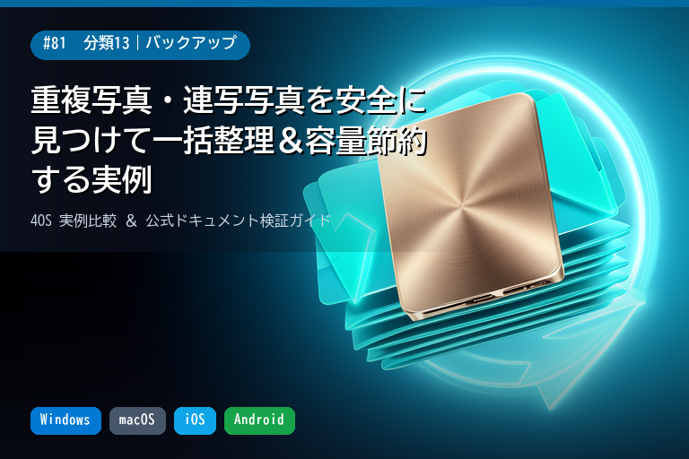

#81｜分類13: ファイル管理・バックアップ・データ復旧 2026-11-26

重複写真・連写写真を安全に見つけて一括整理＆容量節約する実例｜Windows・macOS・iOS・Android
「スマホやPCのストレージがいっぱいで、写真を整理したいけれど、どれを消していいか判断がつかない……」
「同じような連写写真がたくさんあって、せっかくの思い出が埋もれてしまっている」
このような悩みをお持ちの方は非常に多いです。特にクラウドストレージや外付けHDDの容量を圧迫する「連写（トリガー撮影）」や、同期エラーによる「重複写真」は、放置するとバックアップの効率を下げるだけでなく、必要なデータを見つける手間を増大させます。
この記事では、高価な有料ツールや複雑な画像編集ソフトに頼ることなく、各OSの標準機能や公式アプリを活用して、安全に重複・連写写真を特定し整理する実践的な手順を解説します。
【この記事でわかること】
- Windows / macOS / iOS / Android 各OSでの具体的な整理手順
- 標準機能で「できること」と「できないこと（制限事項）」の正確な把握
- 誤削除を防ぐためのバックアップ連携とトラブル解決策
4OS比較早見表
| OS | 重複検出の仕組み | 主な整理手法 | バックアップ連携 | 特徴 |
|---|---|---|---|---|
| Windows 11 | メタデータ（名前・サイズ等）一致 | エクスプローラーの重複検索機能 | OneDrive | ファイルシステムベースでの管理に強い |
| macOS | 手動フィルタリング | Finderの検索条件指定 | Time Machine | 高度な検索条件で絞り込みが可能 |
| iOS | 手動選択・アルバム整理 | 写真アプリの「最近の写真」確認 | iCloud フォト | 端末内での自動重複削除機能は限定的 |
| Android | AI連携（Googleフォト等） | ファイルマネージャー / Googleフォト | Google フォト | GoogleフォトのAIによる類似写真検出が強力 |
1. Windows 11 での実例手順
Windowsでは、ファイルシステムとしての管理能力を活かして整理を行います。
[公式仕様に基づく実例手順]
- 基本操作: 「この PC」または特定のフォルダを開く → 対象の画像ファイルを複数選択（Ctrlキーを押しながらクリック） → 右クリックメニューから「選択」タブをクリック → 「重複項目を検索」を選択します。
- 注: Windows 10/11 の標準機能として、ファイル属性に基づいた重複検索コマンドが存在します。
- 連写処理: 「写真」アプリを開き、アルバム表示で同じイベント（日付・時刻）の写真を一括選択。右クリックして「名前の変更」を行い、末尾を統一することで管理しやすく整理します。
- バックアップ連携: 「設定」>「システム」>「ストレージ」> 「保存場所の管理」からOneDriveと同期させます。重複削除を実行する前に、OneDriveのバージョン履歴を確認しておくことで、誤操作によるデータ損失を防げます。
[標準機能の制限事項]
- 検索精度: 画像の内容（AI解析）ではなく、「ファイル名」「サイズ」「作成日時」というメタデータが完全に一致する場合にのみ検出されます。そのため、微妙に異なる時刻で撮影された連写写真は「重複」として認識されないことがあります。
- 操作不可項目: 「写真」アプリ内での自動的な「類似写真を統合する」といったAI機能は標準では非対応です（手動選択とリネームによる整理が基本となります）。
[よくあるトラブルと解決法]
- 「重複項目を検索」が反応しない
- 原因: ファイルシステム上のエラーや、フォルダへのアクセス権限不足。
- 解決: 「この PC」の「プロパティ」>「ツール」>「属性を修復する（チェックディスク）」を実行し再起動後再試行。また、「管理者として実行」でコマンドプロンプトを開き
sfc /scannowを実施してください。 - 連写写真が別々のフォルダに散らばっている
- 解決: 「この PC」>「画像」を右クリックし、すべての画像を選択 → 新しく作成したフォルダへ一括コピー（またはカット＆ペースト）します。手動での整理は必須ですが、標準機能で一括移動は可能です。
- 削除したつもりがバックアップにない
- 解決: OneDriveを使用している場合、「OneDrive」アプリを開き「ファイルとフォルダー」>「バージョン履歴」から直前の状態を復元してください。
2. macOS での実例手順
macOSでは、Finderの強力な検索フィルタリングを活用します。
[公式仕様に基づく実例手順]
- 基本操作: 「Finder」を開き、対象フォルダを選択 → メニューバーの 「表示」 > 「検索」（または Cmd+F）をクリック。
- 重複特定: 検索条件に「種類：画像」と設定し、「日付作成」「サイズ」を指定して絞り込みます。さらに「拡張子」で
.jpgと限定することで、目的のファイルを抽出します。 - 注: macOSの標準機能では、内容が同じでも名前が異なるファイルの自動検出は非対応であるため、手動でのフィルタリング（属性指定）が基本となります。
- 連写処理: 「写真アプリ」を開き、「ライブラリ」 > 「アルバム」 で同じ日付のイベントを表示。「選択」>「名前の変更」で統合するか、共有機能を使って整理します。
- バックアップ連携: Time Machineを設定済みであれば、削除前にタイムラインを確認することで安全に操作が行えます。
[標準機能の制限事項]
- 重複検出非対応: Finderの検索はファイル名の完全一致や属性のみで絞り込むため、「内容が同じだが名前が違う」連写写真は自動で見つけられません。これはmacOS標準機能の仕様であり、代替手段として手動フィルタリングが必要です。
- 写真アプリの制限: 「重複を削除する」というボタン自体は存在しないため、高度な整理には外部ツールが必要になるケースがあります。
[よくあるトラブルと解決法]
- 「検索」で結果が出ない
- 原因: Spotlight索引が更新されていない、または隠しファイルとして表示されている。
- 解決: 「Finder」>「移動」>「Go」>「リフレッシュ」をクリックするか、Spotlightの再構築を待ちます（再起動も有効です）。また、「オプション」で「すべての結果を表示」に切り替えてください。
- 連写写真が重複して保存されている
- 解決: Finderで検索し、同じ日付・時刻の写真を選択 → 「名前の変更」→ 末尾の数字を統一（例：IMG_001, IMG_001_copy をすべて IMG_001 に変更）します。その後不要なファイルをゴミ箱へ移動させます。
- Time Machine で復元できない
- 原因: バックアップディスクのフォーマット不良、または設定の破損。
- 解決: 「システム設定」>「一般」>「タイムマシン」でバックアップ先を変更するか、マウントした外付けHDDを一度削除して再追加してください。
3. iOS (iPhone / iPad) での実例手順
iOSはモバイル端末としての制限があるため、写真アプリ内での視覚的な確認が中心となります。
[公式仕様に基づく実例手順]
- 基本操作: 「ファイル」アプリを開き、iCloud Drive またはローカルストレージから画像を選択します。
- 重複特定・整理: 「写真」アプリで「アルバム」>「最近の写真」を表示し、連写（同じ日付と時刻）をタップして選択します。その後、「共有」または「編集」機能を使って不要なものを削除するか、手動で整理します。
- 注: iOSの標準機能では、写真アプリ内での自動的な重複検出や統合は非対応です。ユーザー自身が日付・時刻を手動で確認して選択する必要があります。
- バックアップ連携: iCloudフォトを有効にし、「最適化されたストレージ」を使用している場合、端末から削除してもクラウドに保存されていることを確認してから操作を行います。
[標準機能の制限事項]
- 重複検出非対応: 「写真」アプリ内に「類似写真を統合する」というボタンは存在しません（AndroidのGoogleフォトやWindows 10/11との違い）。iOSの仕様上、手動での選択と削除が唯一の方法です。
- 外部ストレージ接続の制限: iPhoneに外付けHDDを直接接続して写真を読み取ることはできないため、PCやMacへ転送してから整理する必要があります。
[よくあるトラブルと解決法]
- 「最近の写真」で連写が見当たらない
- 原因: 「iCloud フォト」がオフになっているか、「最適化されたストレージ」によりローカルから削除されている。
- 解決: 「設定」>「[自分の名前]」>「iCloud」>「写真」をオンにし、すべてのデータをダウンロードしてから整理します。また、「アルバム」で手動作成したフォルダも確認してください。
- 誤って重要な写真を削除してしまった
- 解決: iCloudフォトが有効な場合、iPhoneから削除してもクラウドに残っているため、他のデバイス（PC/Mac）で確認して復元します。また、「最近の削除」フォルダから30日以内であれば戻せます。
- 外部ストレージからの読み込み失敗
- 解決: iPhoneに外付けHDDを直接接続することはできないため、Lightning/USB-Cケーブルを介したPC/Macへファイルを転送し整理してください。
4. Android での実例手順
Androidはメーカーや機種によってファイルマネージャーの仕様が異なりますが、Googleフォトとの連携が強力です。
[公式仕様に基づく実例手順]
- 基本操作: 「ファイル」アプリまたは端末標準の「マイファイル」を開き、カメラロールやDCIMフォルダにアクセスします。
- 重複特定・整理: 連写写真は通常、同じ日付と時刻を持つため、「写真ギャラリー」で表示し、手動で選択して削除します。Googleアカウントを同期している場合、「Google フォト」アプリを開き「アルバム」>「類似の写真」（AI機能）を使用できる場合があります（機種依存あり）。
- 注: Androidの標準機能として、すべての端末に「重複ファイルの検索」というコマンドは存在しません。基本は手動フィルタリングとなります。GoogleフォトにはAIによる類似写真検出がある場合もありますが、これはGoogleアカウント連携が必要です。
- バックアップ連携: 「設定」>「アカウント」でGoogleアカウントを同期させ、「Google フォト」に自動保存を設定します。
[標準機能の制限事項]
- 重複検出非対応: 端末メーカーによって異なりますが、多くのAndroidデバイスでは標準ファイルマネージャー内に「重複を検索」というボタンは存在しません（PixelやSamsungの一部モデルを除く）。これはAndroid OSの仕様上、手動での選択が基本となります。
よくあるトラブルと解決チェックリスト
- [ ] 「重複項目を検索」が反応しない（Windows）
- 原因：ファイルシステムエラーまたは権限不足。
- 対処：ディスクのチェック（chkdsk）を実行し、管理者権限で再試行してください。
- [ ] 削除したはずの写真が消えない / 消せない
- 原因：クラウド同期中、またはファイルが他のアプリで使用中。
- 対処：OneDriveやiCloudの同期を一時停止するか、使用中のアプリをすべて閉じてから実行してください。
- [ ] 連写写真が多すぎて手動で選ぶのが困難
- 原因：標準機能では「内容の類似性」を判別できないため。
- 対処：GoogleフォトのAI整理機能を活用するか、PCへ転送して日付順にソートした状態で一括操作してください。
まとめ：快適なマルチOS環境を作るポイント
重複写真や連写写真を整理することは、単なる容量節約だけでなく、大切な思い出を「探しやすくする」ための重要なメンテナンスです。各OSの標準機能を正しく理解し、バックアップを確保した上で整理を進めることが、データ損失を防ぐ最大の秘訣です。
より快適で安全な管理環境を構築するために、以下のツールの導入も検討してみてください。
- 外付けHDD/SSD: 大容量の写真をPCやMacに集約し、OS標準機能を使ってじっくりと整理するための「作業場」として最適です。
- クラウドバックアップ（Googleフォト / iCloud）: 常に最新の状態を同期させ、デバイスの紛失や故障に備えるための必須ツールです。
- データ復旧ソフト・バックアップソフト: 万が一の誤削除やシステムトラブルに備え、定期的な自動バックアップを設定しておくことで、安心して整理作業に取り組めます。
まずは現在のストレージ状況を確認し、今日から少しずつ「不要な重複」を削ぎ落としていきましょう。
参考文献・公式ドキュメント（一次情報ソース）
本記事の手順・仕様は以下の各OSおよびツールの公式ドキュメントに基づいています。OSアップデートによりメニュー名称や挙動が変わる場合があるため、最新仕様の確認にもご活用ください。